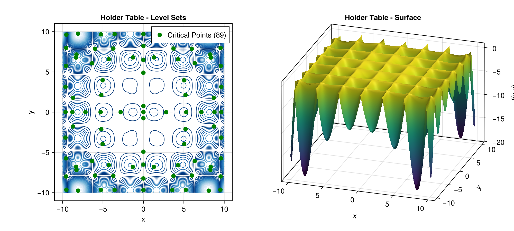

Examples
This page provides pointers to runnable example files demonstrating Globtim features. Run examples from the globtimcore root directory.
Running Examples
julia --project=. Examples/hpc_minimal_2d_example.jlQuick Reference
| Feature | Example File | Description |
|---|---|---|
| Basic 2D workflow | Examples/hpc_minimal_2d_example.jl | Complete polynomial → critical points |
| Custom objectives | Examples/custom_function_demo.jl | User-defined functions |
| Sparsification | Examples/sparsification_demo.jl | Coefficient truncation |
| Anisotropic grids | Examples/anisotropic_grid_demo.jl | Non-uniform spacing |
| High-dimensional | Examples/high_dimensional_demo.jl | 3D/4D problems |
| Domain exploration | Examples/domain_sweep_demo.jl | Domain size effects |
| 1D functions | Examples/scalar_function_demo.jl | Scalar input functions |
| Degree comparison | Examples/polynomial_basis_comparison.jl | Chebyshev vs Legendre |
Test Function Gallery
Visual examples of Globtim finding critical points on standard benchmark functions.
Deuflhard

Holder Table

Beale

Branin

Basic 2D Workflow
See: Examples/hpc_minimal_2d_example.jl
Core API sequence:
| Step | API Call |
|---|---|
| 1. Define problem | test_input(f, dim=2, center=[0.0,0.0], sample_range=1.2) |
| 2. Build polynomial | Constructor(TR, degree) |
| 3. Find critical pts | solve_polynomial_system(x, pol) |
| 4. Process solutions | process_crit_pts(solutions, f, TR) |
| 5. Analyze & classify | analyze_critical_points(f, df, TR, enable_hessian=true) |
Custom Objective Functions
See: Examples/custom_function_demo.jl
Define any function accepting a vector x and returning a scalar:
my_function(x) = (x[1]^2 - 1)^2 + (x[2]^2 - 1)^2 + 0.1*sin(10*x[1]*x[2])Statistical Analysis with Tables
See: Examples/hierarchical_experiment_example.jl
API pattern:
df_enhanced, df_min, tables, stats = analyze_critical_points_with_tables(f, df, TR, show_tables=true)Export options: write_tables_to_csv(), write_tables_to_markdown(), write_tables_to_latex()
High-Dimensional Problems (3D/4D)
See: Examples/high_dimensional_demo.jl
Tips:
- Use
AdaptivePrecisionfor accuracy/performance balance - Reduce polynomial degree as dimension increases (4D → degree 4-6)
- Disable Hessian analysis for faster results:
enable_hessian=false
Domain Exploration
See: Examples/domain_sweep_demo.jl
Test different domain sizes to find all critical points:
TR = test_input(f, dim=2, center=[0.0, 0.0], sample_range=r) # uniform
TR = test_input(f, dim=2, center=[0.0, 0.0], sample_range=[2.0, 1.0]) # rectangularVisualization
For plotting critical points and convergence analysis, use the globtimplots package:
using GlobtimPlots
fig = plot_critical_points(df_enhanced)
fig = plot_convergence(results)See globtimplots documentation for available plot types.
Polynomial Degree Comparison
See: Examples/polynomial_basis_comparison.jl
Compare Chebyshev vs Legendre bases and analyze how polynomial degree affects approximation quality and critical point discovery.
1D Functions with Scalar Input
See: Examples/scalar_function_demo.jl
Works with functions like sin, cos that expect scalar input:
f = x -> sin(3x) + 0.1*x^2
TR = test_input(f, dim=1, center=[0.0], sample_range=π)Basin Analysis
See: Examples/validation_integration_test.jl
Analyze convergence basins for critical points. The df_min DataFrame includes:
basin_points- Number of points converging to this minimumaverage_convergence_steps- Mean BFGS iterationsregion_coverage_count- Spatial coverage metric
Advanced Examples
| Example | Description |
|---|---|
Examples/standardized_experiment_template.jl | Template for reproducible experiments |
Examples/automated_experiment_template.jl | Batch experiment automation |
Examples/random_p_true_example.jl | Parameter estimation workflows |
Examples/quick_subdivision_demo.jl | Adaptive subdivision methods |
Next Steps
- Getting Started - Basic concepts and setup
- API Reference - Complete function documentation
- Precision Parameters - Numerical precision options
- Sparsification - Polynomial complexity reduction